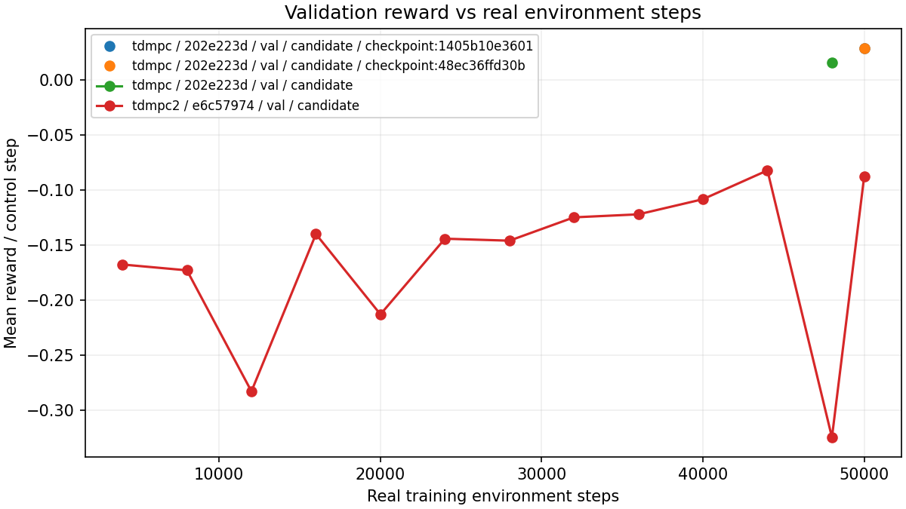
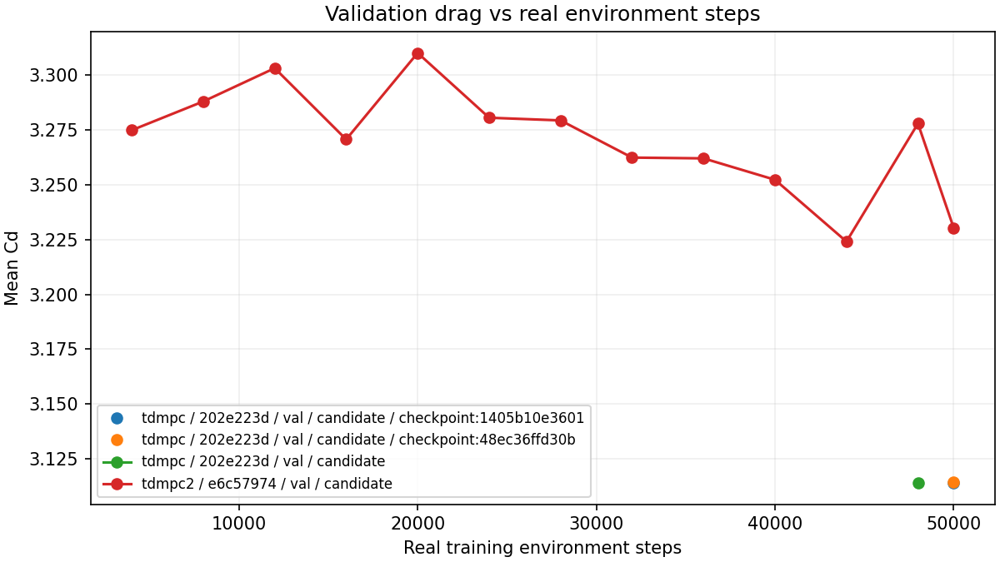
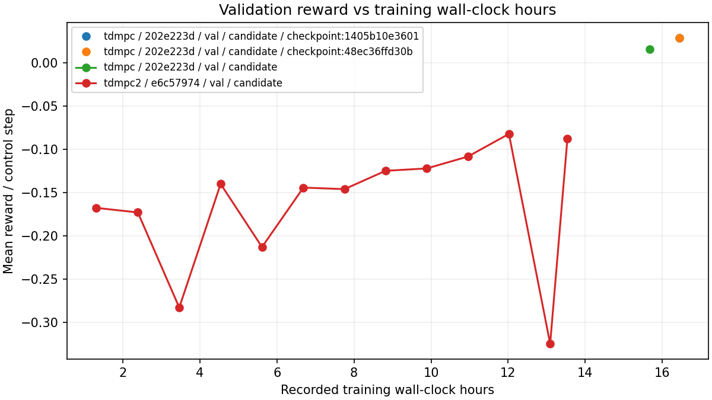
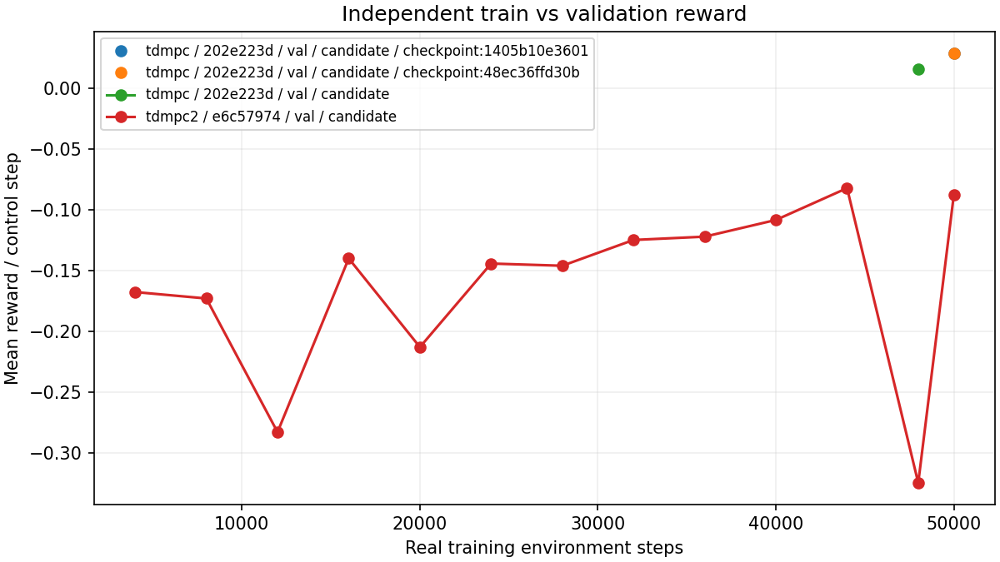
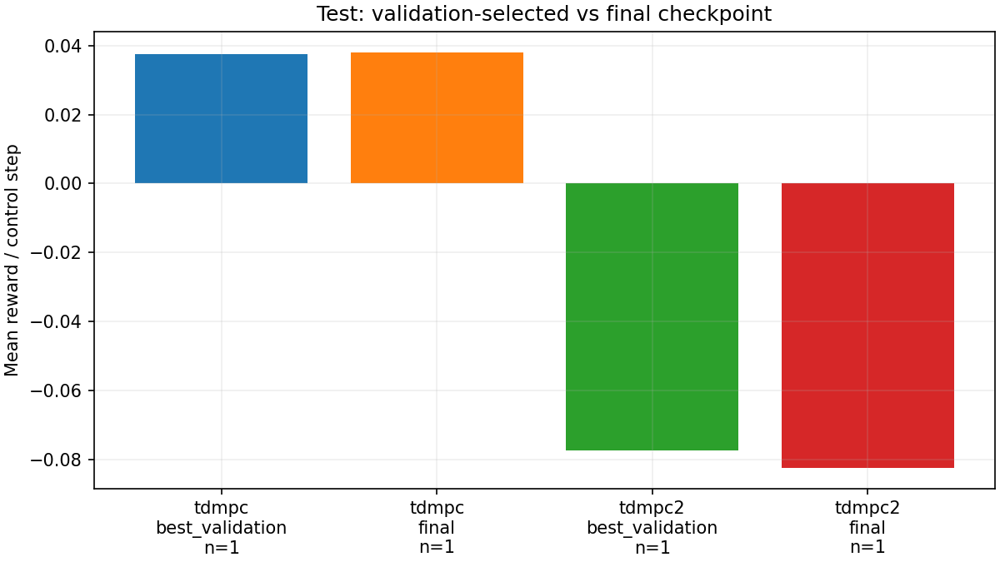
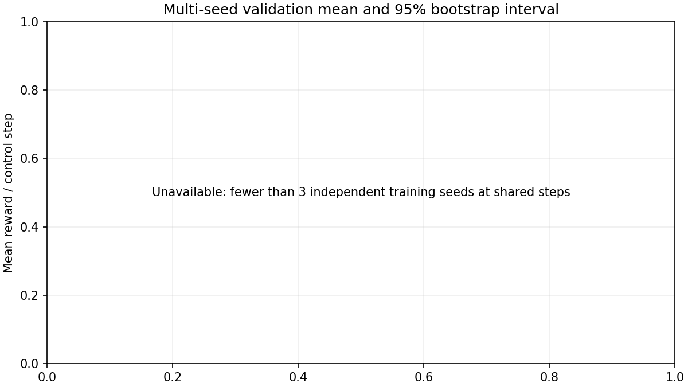
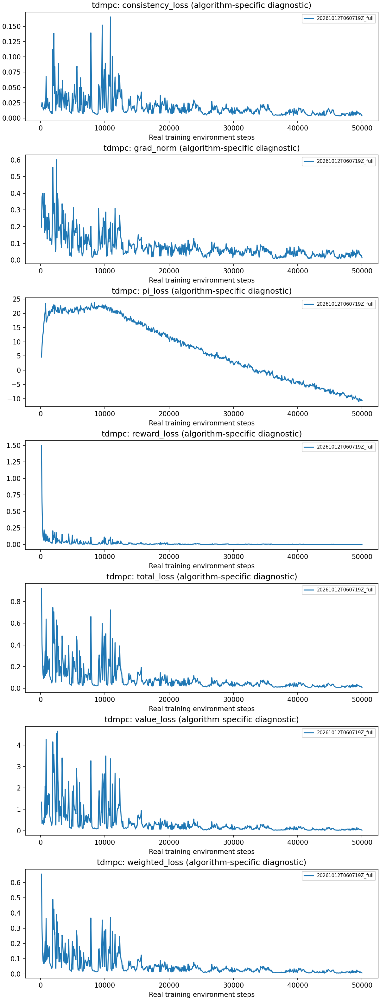
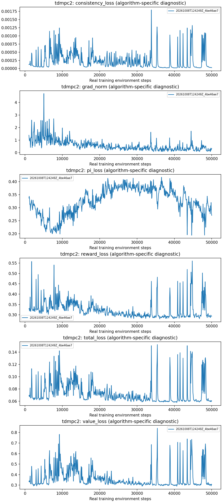

Independent evaluations only in performance figures. Splits and incompatible cohorts stay separate. Missing evidence is not zero.
CSV · Parquet · Metric mapping · Provenance
Cohort: d7b825958fb5851c3e7a7e2d · available

Cohort: d7b825958fb5851c3e7a7e2d · available

Cohort: d7b825958fb5851c3e7a7e2d · available

Cohort: d7b825958fb5851c3e7a7e2d · Partial evidence: independent train or validation evaluation missing; no legacy substitution

Cohort: d7b825958fb5851c3e7a7e2d · available

Cohort: d7b825958fb5851c3e7a7e2d · Unavailable: fewer than 3 independent training seeds at shared steps

Cohort: diagnostics · diagnostic

Cohort: diagnostics · diagnostic

| algorithm | run_id | split | kind | metric | value | status | reason |
|---|---|---|---|---|---|---|---|
| tdmpc | 20261012T060719Z_full | val | independent_evaluation | compare/val/mean_reward_per_step | 0.028861 | available | |
| tdmpc | 20261012T060719Z_full | val | independent_evaluation | compare/val/episode_return | 2.308918 | available | |
| tdmpc | 20261012T060719Z_full | val | independent_evaluation | compare/val/drag | 3.114012 | available | |
| tdmpc | 20261012T060719Z_full | val | independent_evaluation | compare/val/abs_lift | 0.185282 | available | |
| tdmpc | 20261012T060719Z_full | val | independent_evaluation | compare/val/lift | 0.009172 | available | |
| tdmpc | 20261012T060719Z_full | val | independent_evaluation | compare/val/drag_reduction_percent | 6.425146 | available | |
| tdmpc | 20261012T060719Z_full | val | independent_evaluation | compare/val/episode_length | 80.000000 | available | |
| tdmpc | 20261012T060719Z_full | val | independent_evaluation | compare/val/evaluation_wall_seconds | 662.173031 | available | |
| tdmpc | 20261012T060719Z_full | val | independent_evaluation | compare/val/action_mean | -0.009319 | available | |
| tdmpc | 20261012T060719Z_full | val | independent_evaluation | compare/val/action_std | 0.223694 | available | |
| tdmpc | 20261012T060719Z_full | val | independent_evaluation | compare/val/action_abs_max | 1.000000 | available | |
| tdmpc | 20261012T060719Z_full | val | independent_evaluation | compare/val/action_clipped_fraction | 0.000000 | available | |
| tdmpc | 20261012T060719Z_full | val | independent_evaluation | compare/val/mean_reward_per_step | 0.028637 | available | |
| tdmpc | 20261012T060719Z_full | val | independent_evaluation | compare/val/episode_return | 2.290976 | available | |
| tdmpc | 20261012T060719Z_full | val | independent_evaluation | compare/val/drag | 3.114218 | available | |
| tdmpc | 20261012T060719Z_full | val | independent_evaluation | compare/val/abs_lift | 0.185301 | available | |
| tdmpc | 20261012T060719Z_full | val | independent_evaluation | compare/val/lift | 0.009036 | available | |
| tdmpc | 20261012T060719Z_full | val | independent_evaluation | compare/val/drag_reduction_percent | 6.418983 | available | |
| tdmpc | 20261012T060719Z_full | val | independent_evaluation | compare/val/episode_length | 80.000000 | available | |
| tdmpc | 20261012T060719Z_full | val | independent_evaluation | compare/val/evaluation_wall_seconds | 662.232445 | available | |
| tdmpc | 20261012T060719Z_full | val | independent_evaluation | compare/val/action_mean | -0.009311 | available | |
| tdmpc | 20261012T060719Z_full | val | independent_evaluation | compare/val/action_std | 0.225331 | available | |
| tdmpc | 20261012T060719Z_full | val | independent_evaluation | compare/val/action_abs_max | 1.000000 | available | |
| tdmpc | 20261012T060719Z_full | val | independent_evaluation | compare/val/action_clipped_fraction | 0.000000 | available | |
| tdmpc | 20261012T060719Z_full | val | independent_evaluation | compare/val/mean_reward_per_step | 0.015867 | available | |
| tdmpc | 20261012T060719Z_full | val | independent_evaluation | compare/val/episode_return | 1.269343 | available | |
| tdmpc | 20261012T060719Z_full | val | independent_evaluation | compare/val/drag | 3.114167 | available | |
| tdmpc | 20261012T060719Z_full | val | independent_evaluation | compare/val/abs_lift | 0.198122 | available | |
| tdmpc | 20261012T060719Z_full | val | independent_evaluation | compare/val/lift | 0.032527 | available | |
| tdmpc | 20261012T060719Z_full | val | independent_evaluation | compare/val/drag_reduction_percent | 6.420509 | available | |
| tdmpc | 20261012T060719Z_full | val | independent_evaluation | compare/val/episode_length | 80.000000 | available | |
| tdmpc | 20261012T060719Z_full | val | independent_evaluation | compare/val/evaluation_wall_seconds | 717.795546 | available | |
| tdmpc | 20261012T060719Z_full | val | independent_evaluation | compare/val/action_mean | -0.014556 | available | |
| tdmpc | 20261012T060719Z_full | val | independent_evaluation | compare/val/action_std | 0.229648 | available | |
| tdmpc | 20261012T060719Z_full | val | independent_evaluation | compare/val/action_abs_max | 1.000000 | available | |
| tdmpc | 20261012T060719Z_full | val | independent_evaluation | compare/val/action_clipped_fraction | 0.000000 | available | |
| tdmpc | 20261012T060719Z_full | test | independent_evaluation | compare/test/mean_reward_per_step | 0.037628 | available | |
| tdmpc | 20261012T060719Z_full | test | independent_evaluation | compare/test/episode_return | 3.010271 | available | |
| tdmpc | 20261012T060719Z_full | test | independent_evaluation | compare/test/drag | 3.110047 | available | |
| tdmpc | 20261012T060719Z_full | test | independent_evaluation | compare/test/abs_lift | 0.180480 | available | |
| tdmpc | 20261012T060719Z_full | test | independent_evaluation | compare/test/lift | 0.031250 | available | |
| tdmpc | 20261012T060719Z_full | test | independent_evaluation | compare/test/drag_reduction_percent | 6.544299 | available | |
| tdmpc | 20261012T060719Z_full | test | independent_evaluation | compare/test/episode_length | 80.000000 | available | |
| tdmpc | 20261012T060719Z_full | test | independent_evaluation | compare/test/evaluation_wall_seconds | 695.495870 | available | |
| tdmpc | 20261012T060719Z_full | test | independent_evaluation | compare/test/action_mean | -0.013530 | available | |
| tdmpc | 20261012T060719Z_full | test | independent_evaluation | compare/test/action_std | 0.220652 | available | |
| tdmpc | 20261012T060719Z_full | test | independent_evaluation | compare/test/action_abs_max | 1.000000 | available | |
| tdmpc | 20261012T060719Z_full | test | independent_evaluation | compare/test/action_clipped_fraction | 0.000000 | available | |
| tdmpc | 20261012T060719Z_full | test | independent_evaluation | compare/test/mean_reward_per_step | 0.038125 | available | |
| tdmpc | 20261012T060719Z_full | test | independent_evaluation | compare/test/episode_return | 3.049961 | available | |
| tdmpc | 20261012T060719Z_full | test | independent_evaluation | compare/test/drag | 3.110108 | available | |
| tdmpc | 20261012T060719Z_full | test | independent_evaluation | compare/test/abs_lift | 0.179923 | available | |
| tdmpc | 20261012T060719Z_full | test | independent_evaluation | compare/test/lift | 0.031376 | available | |
| tdmpc | 20261012T060719Z_full | test | independent_evaluation | compare/test/drag_reduction_percent | 6.542463 | available | |
| tdmpc | 20261012T060719Z_full | test | independent_evaluation | compare/test/episode_length | 80.000000 | available | |
| tdmpc | 20261012T060719Z_full | test | independent_evaluation | compare/test/evaluation_wall_seconds | 690.652551 | available | |
| tdmpc | 20261012T060719Z_full | test | independent_evaluation | compare/test/action_mean | -0.013396 | available | |
| tdmpc | 20261012T060719Z_full | test | independent_evaluation | compare/test/action_std | 0.220854 | available | |
| tdmpc | 20261012T060719Z_full | test | independent_evaluation | compare/test/action_abs_max | 1.000000 | available | |
| tdmpc | 20261012T060719Z_full | test | independent_evaluation | compare/test/action_clipped_fraction | 0.000000 | available | |
| tdmpc2 | 20261008T124249Z_4be46ae7 | val | independent_evaluation | compare/val/mean_reward_per_step | -0.087696 | available | |
| tdmpc2 | 20261008T124249Z_4be46ae7 | val | independent_evaluation | compare/val/episode_return | -7.015681 | available | |
| tdmpc2 | 20261008T124249Z_4be46ae7 | val | independent_evaluation | compare/val/drag | 3.230288 | available | |
| tdmpc2 | 20261008T124249Z_4be46ae7 | val | independent_evaluation | compare/val/abs_lift | 0.185564 | available | |
| tdmpc2 | 20261008T124249Z_4be46ae7 | val | independent_evaluation | compare/val/lift | 0.020955 | available | |
| tdmpc2 | 20261008T124249Z_4be46ae7 | val | independent_evaluation | compare/val/drag_reduction_percent | 2.931120 | available | |
| tdmpc2 | 20261008T124249Z_4be46ae7 | val | independent_evaluation | compare/val/episode_length | 80.000000 | available | |
| tdmpc2 | 20261008T124249Z_4be46ae7 | val | independent_evaluation | compare/val/evaluation_wall_seconds | 713.537308 | available | |
| tdmpc2 | 20261008T124249Z_4be46ae7 | val | independent_evaluation | compare/val/action_mean | -0.016444 | available | |
| tdmpc2 | 20261008T124249Z_4be46ae7 | val | independent_evaluation | compare/val/action_std | 0.270242 | available | |
| tdmpc2 | 20261008T124249Z_4be46ae7 | val | independent_evaluation | compare/val/action_abs_max | 0.991494 | available | |
| tdmpc2 | 20261008T124249Z_4be46ae7 | val | independent_evaluation | compare/val/action_clipped_fraction | 0.000000 | available | |
| tdmpc2 | 20261008T124249Z_4be46ae7 | val | independent_evaluation | compare/val/mean_reward_per_step | -0.282854 | available | |
| tdmpc2 | 20261008T124249Z_4be46ae7 | val | independent_evaluation | compare/val/episode_return | -22.628305 | available | |
| tdmpc2 | 20261008T124249Z_4be46ae7 | val | independent_evaluation | compare/val/drag | 3.303130 | available | |
| tdmpc2 | 20261008T124249Z_4be46ae7 | val | independent_evaluation | compare/val/abs_lift | 0.307879 | available | |
| tdmpc2 | 20261008T124249Z_4be46ae7 | val | independent_evaluation | compare/val/lift | -0.189626 | available | |
| tdmpc2 | 20261008T124249Z_4be46ae7 | val | independent_evaluation | compare/val/drag_reduction_percent | 0.742241 | available | |
| tdmpc2 | 20261008T124249Z_4be46ae7 | val | independent_evaluation | compare/val/episode_length | 80.000000 | available | |
| tdmpc2 | 20261008T124249Z_4be46ae7 | val | independent_evaluation | compare/val/evaluation_wall_seconds | 679.078146 | available | |
| tdmpc2 | 20261008T124249Z_4be46ae7 | val | independent_evaluation | compare/val/action_mean | 0.039565 | available | |
| tdmpc2 | 20261008T124249Z_4be46ae7 | val | independent_evaluation | compare/val/action_std | 0.325642 | available | |
| tdmpc2 | 20261008T124249Z_4be46ae7 | val | independent_evaluation | compare/val/action_abs_max | 1.000000 | available | |
| tdmpc2 | 20261008T124249Z_4be46ae7 | val | independent_evaluation | compare/val/action_clipped_fraction | 0.000000 | available | |
| tdmpc2 | 20261008T124249Z_4be46ae7 | val | independent_evaluation | compare/val/mean_reward_per_step | -0.140080 | available | |
| tdmpc2 | 20261008T124249Z_4be46ae7 | val | independent_evaluation | compare/val/episode_return | -11.206431 | available | |
| tdmpc2 | 20261008T124249Z_4be46ae7 | val | independent_evaluation | compare/val/drag | 3.270642 | available | |
| tdmpc2 | 20261008T124249Z_4be46ae7 | val | independent_evaluation | compare/val/abs_lift | 0.197594 | available | |
| tdmpc2 | 20261008T124249Z_4be46ae7 | val | independent_evaluation | compare/val/lift | -0.020028 | available | |
| tdmpc2 | 20261008T124249Z_4be46ae7 | val | independent_evaluation | compare/val/drag_reduction_percent | 1.718480 | available | |
| tdmpc2 | 20261008T124249Z_4be46ae7 | val | independent_evaluation | compare/val/episode_length | 80.000000 | available | |
| tdmpc2 | 20261008T124249Z_4be46ae7 | val | independent_evaluation | compare/val/evaluation_wall_seconds | 658.749711 | available | |
| tdmpc2 | 20261008T124249Z_4be46ae7 | val | independent_evaluation | compare/val/action_mean | -0.010591 | available | |
| tdmpc2 | 20261008T124249Z_4be46ae7 | val | independent_evaluation | compare/val/action_std | 0.283114 | available | |
| tdmpc2 | 20261008T124249Z_4be46ae7 | val | independent_evaluation | compare/val/action_abs_max | 0.998228 | available | |
| tdmpc2 | 20261008T124249Z_4be46ae7 | val | independent_evaluation | compare/val/action_clipped_fraction | 0.000000 | available | |
| tdmpc2 | 20261008T124249Z_4be46ae7 | val | independent_evaluation | compare/val/mean_reward_per_step | -0.212971 | available | |
| tdmpc2 | 20261008T124249Z_4be46ae7 | val | independent_evaluation | compare/val/episode_return | -17.037681 | available | |
| tdmpc2 | 20261008T124249Z_4be46ae7 | val | independent_evaluation | compare/val/drag | 3.310080 | available | |
| tdmpc2 | 20261008T124249Z_4be46ae7 | val | independent_evaluation | compare/val/abs_lift | 0.231046 | available | |
| tdmpc2 | 20261008T124249Z_4be46ae7 | val | independent_evaluation | compare/val/lift | -0.075886 | available | |
| tdmpc2 | 20261008T124249Z_4be46ae7 | val | independent_evaluation | compare/val/drag_reduction_percent | 0.533377 | available | |
| tdmpc2 | 20261008T124249Z_4be46ae7 | val | independent_evaluation | compare/val/episode_length | 80.000000 | available | |
| tdmpc2 | 20261008T124249Z_4be46ae7 | val | independent_evaluation | compare/val/evaluation_wall_seconds | 680.709898 | available | |
| tdmpc2 | 20261008T124249Z_4be46ae7 | val | independent_evaluation | compare/val/action_mean | 0.000844 | available | |
| tdmpc2 | 20261008T124249Z_4be46ae7 | val | independent_evaluation | compare/val/action_std | 0.308825 | available | |
| tdmpc2 | 20261008T124249Z_4be46ae7 | val | independent_evaluation | compare/val/action_abs_max | 0.989479 | available | |
| tdmpc2 | 20261008T124249Z_4be46ae7 | val | independent_evaluation | compare/val/action_clipped_fraction | 0.000000 | available | |
| tdmpc2 | 20261008T124249Z_4be46ae7 | val | independent_evaluation | compare/val/mean_reward_per_step | -0.144280 | available | |
| tdmpc2 | 20261008T124249Z_4be46ae7 | val | independent_evaluation | compare/val/episode_return | -11.542365 | available | |
| tdmpc2 | 20261008T124249Z_4be46ae7 | val | independent_evaluation | compare/val/drag | 3.280535 | available | |
| tdmpc2 | 20261008T124249Z_4be46ae7 | val | independent_evaluation | compare/val/abs_lift | 0.191900 | available | |
| tdmpc2 | 20261008T124249Z_4be46ae7 | val | independent_evaluation | compare/val/lift | -0.001843 | available | |
| tdmpc2 | 20261008T124249Z_4be46ae7 | val | independent_evaluation | compare/val/drag_reduction_percent | 1.421216 | available | |
| tdmpc2 | 20261008T124249Z_4be46ae7 | val | independent_evaluation | compare/val/episode_length | 80.000000 | available | |
| tdmpc2 | 20261008T124249Z_4be46ae7 | val | independent_evaluation | compare/val/evaluation_wall_seconds | 701.441378 | available | |
| tdmpc2 | 20261008T124249Z_4be46ae7 | val | independent_evaluation | compare/val/action_mean | -0.015426 | available | |
| tdmpc2 | 20261008T124249Z_4be46ae7 | val | independent_evaluation | compare/val/action_std | 0.303425 | available | |
| tdmpc2 | 20261008T124249Z_4be46ae7 | val | independent_evaluation | compare/val/action_abs_max | 1.000000 | available | |
| tdmpc2 | 20261008T124249Z_4be46ae7 | val | independent_evaluation | compare/val/action_clipped_fraction | 0.000000 | available | |
| tdmpc2 | 20261008T124249Z_4be46ae7 | val | independent_evaluation | compare/val/mean_reward_per_step | -0.146088 | available | |
| tdmpc2 | 20261008T124249Z_4be46ae7 | val | independent_evaluation | compare/val/episode_return | -11.687052 | available | |
| tdmpc2 | 20261008T124249Z_4be46ae7 | val | independent_evaluation | compare/val/drag | 3.279308 | available | |
| tdmpc2 | 20261008T124249Z_4be46ae7 | val | independent_evaluation | compare/val/abs_lift | 0.194935 | available | |
| tdmpc2 | 20261008T124249Z_4be46ae7 | val | independent_evaluation | compare/val/lift | -0.002653 | available | |
| tdmpc2 | 20261008T124249Z_4be46ae7 | val | independent_evaluation | compare/val/drag_reduction_percent | 1.458067 | available | |
| tdmpc2 | 20261008T124249Z_4be46ae7 | val | independent_evaluation | compare/val/episode_length | 80.000000 | available | |
| tdmpc2 | 20261008T124249Z_4be46ae7 | val | independent_evaluation | compare/val/evaluation_wall_seconds | 700.984139 | available | |
| tdmpc2 | 20261008T124249Z_4be46ae7 | val | independent_evaluation | compare/val/action_mean | -0.014539 | available | |
| tdmpc2 | 20261008T124249Z_4be46ae7 | val | independent_evaluation | compare/val/action_std | 0.296975 | available | |
| tdmpc2 | 20261008T124249Z_4be46ae7 | val | independent_evaluation | compare/val/action_abs_max | 1.000000 | available | |
| tdmpc2 | 20261008T124249Z_4be46ae7 | val | independent_evaluation | compare/val/action_clipped_fraction | 0.000000 | available | |
| tdmpc2 | 20261008T124249Z_4be46ae7 | val | independent_evaluation | compare/val/mean_reward_per_step | -0.124894 | available | |
| tdmpc2 | 20261008T124249Z_4be46ae7 | val | independent_evaluation | compare/val/episode_return | -9.991516 | available | |
| tdmpc2 | 20261008T124249Z_4be46ae7 | val | independent_evaluation | compare/val/drag | 3.262359 | available | |
| tdmpc2 | 20261008T124249Z_4be46ae7 | val | independent_evaluation | compare/val/abs_lift | 0.190691 | available | |
| tdmpc2 | 20261008T124249Z_4be46ae7 | val | independent_evaluation | compare/val/lift | 0.018119 | available | |
| tdmpc2 | 20261008T124249Z_4be46ae7 | val | independent_evaluation | compare/val/drag_reduction_percent | 1.967403 | available | |
| tdmpc2 | 20261008T124249Z_4be46ae7 | val | independent_evaluation | compare/val/episode_length | 80.000000 | available | |
| tdmpc2 | 20261008T124249Z_4be46ae7 | val | independent_evaluation | compare/val/evaluation_wall_seconds | 682.381105 | available | |
| tdmpc2 | 20261008T124249Z_4be46ae7 | val | independent_evaluation | compare/val/action_mean | -0.019226 | available | |
| tdmpc2 | 20261008T124249Z_4be46ae7 | val | independent_evaluation | compare/val/action_std | 0.284871 | available | |
| tdmpc2 | 20261008T124249Z_4be46ae7 | val | independent_evaluation | compare/val/action_abs_max | 1.000000 | available | |
| tdmpc2 | 20261008T124249Z_4be46ae7 | val | independent_evaluation | compare/val/action_clipped_fraction | 0.000000 | available | |
| tdmpc2 | 20261008T124249Z_4be46ae7 | val | independent_evaluation | compare/val/mean_reward_per_step | -0.122173 | available | |
| tdmpc2 | 20261008T124249Z_4be46ae7 | val | independent_evaluation | compare/val/episode_return | -9.773843 | available | |
| tdmpc2 | 20261008T124249Z_4be46ae7 | val | independent_evaluation | compare/val/drag | 3.262003 | available | |
| tdmpc2 | 20261008T124249Z_4be46ae7 | val | independent_evaluation | compare/val/abs_lift | 0.188326 | available | |
| tdmpc2 | 20261008T124249Z_4be46ae7 | val | independent_evaluation | compare/val/lift | 0.005303 | available | |
| tdmpc2 | 20261008T124249Z_4be46ae7 | val | independent_evaluation | compare/val/drag_reduction_percent | 1.978091 | available | |
| tdmpc2 | 20261008T124249Z_4be46ae7 | val | independent_evaluation | compare/val/episode_length | 80.000000 | available | |
| tdmpc2 | 20261008T124249Z_4be46ae7 | val | independent_evaluation | compare/val/evaluation_wall_seconds | 677.062905 | available | |
| tdmpc2 | 20261008T124249Z_4be46ae7 | val | independent_evaluation | compare/val/action_mean | -0.014881 | available | |
| tdmpc2 | 20261008T124249Z_4be46ae7 | val | independent_evaluation | compare/val/action_std | 0.294384 | available | |
| tdmpc2 | 20261008T124249Z_4be46ae7 | val | independent_evaluation | compare/val/action_abs_max | 1.000000 | available | |
| tdmpc2 | 20261008T124249Z_4be46ae7 | val | independent_evaluation | compare/val/action_clipped_fraction | 0.000000 | available | |
| tdmpc2 | 20261008T124249Z_4be46ae7 | val | independent_evaluation | compare/val/mean_reward_per_step | -0.167715 | available | |
| tdmpc2 | 20261008T124249Z_4be46ae7 | val | independent_evaluation | compare/val/episode_return | -13.417237 | available | |
| tdmpc2 | 20261008T124249Z_4be46ae7 | val | independent_evaluation | compare/val/drag | 3.274850 | available | |
| tdmpc2 | 20261008T124249Z_4be46ae7 | val | independent_evaluation | compare/val/abs_lift | 0.221021 | available | |
| tdmpc2 | 20261008T124249Z_4be46ae7 | val | independent_evaluation | compare/val/lift | -0.003995 | available | |
| tdmpc2 | 20261008T124249Z_4be46ae7 | val | independent_evaluation | compare/val/drag_reduction_percent | 1.592052 | available | |
| tdmpc2 | 20261008T124249Z_4be46ae7 | val | independent_evaluation | compare/val/episode_length | 80.000000 | available | |
| tdmpc2 | 20261008T124249Z_4be46ae7 | val | independent_evaluation | compare/val/evaluation_wall_seconds | 675.697928 | available | |
| tdmpc2 | 20261008T124249Z_4be46ae7 | val | independent_evaluation | compare/val/action_mean | -0.012285 | available | |
| tdmpc2 | 20261008T124249Z_4be46ae7 | val | independent_evaluation | compare/val/action_std | 0.271859 | available | |
| tdmpc2 | 20261008T124249Z_4be46ae7 | val | independent_evaluation | compare/val/action_abs_max | 0.775962 | available | |
| tdmpc2 | 20261008T124249Z_4be46ae7 | val | independent_evaluation | compare/val/action_clipped_fraction | 0.000000 | available | |
| tdmpc2 | 20261008T124249Z_4be46ae7 | val | independent_evaluation | compare/val/mean_reward_per_step | -0.108448 | available | |
| tdmpc2 | 20261008T124249Z_4be46ae7 | val | independent_evaluation | compare/val/episode_return | -8.675828 | available | |
| tdmpc2 | 20261008T124249Z_4be46ae7 | val | independent_evaluation | compare/val/drag | 3.252245 | available | |
| tdmpc2 | 20261008T124249Z_4be46ae7 | val | independent_evaluation | compare/val/abs_lift | 0.184358 | available | |
| tdmpc2 | 20261008T124249Z_4be46ae7 | val | independent_evaluation | compare/val/lift | 0.014028 | available | |
| tdmpc2 | 20261008T124249Z_4be46ae7 | val | independent_evaluation | compare/val/drag_reduction_percent | 2.271308 | available | |
| tdmpc2 | 20261008T124249Z_4be46ae7 | val | independent_evaluation | compare/val/episode_length | 80.000000 | available | |
| tdmpc2 | 20261008T124249Z_4be46ae7 | val | independent_evaluation | compare/val/evaluation_wall_seconds | 666.659055 | available | |
| tdmpc2 | 20261008T124249Z_4be46ae7 | val | independent_evaluation | compare/val/action_mean | -0.017244 | available | |
| tdmpc2 | 20261008T124249Z_4be46ae7 | val | independent_evaluation | compare/val/action_std | 0.292125 | available | |
| tdmpc2 | 20261008T124249Z_4be46ae7 | val | independent_evaluation | compare/val/action_abs_max | 0.998668 | available | |
| tdmpc2 | 20261008T124249Z_4be46ae7 | val | independent_evaluation | compare/val/action_clipped_fraction | 0.000000 | available | |
| tdmpc2 | 20261008T124249Z_4be46ae7 | val | independent_evaluation | compare/val/mean_reward_per_step | -0.082284 | available | |
| tdmpc2 | 20261008T124249Z_4be46ae7 | val | independent_evaluation | compare/val/episode_return | -6.582747 | available | |
| tdmpc2 | 20261008T124249Z_4be46ae7 | val | independent_evaluation | compare/val/drag | 3.224062 | available | |
| tdmpc2 | 20261008T124249Z_4be46ae7 | val | independent_evaluation | compare/val/abs_lift | 0.186377 | available | |
| tdmpc2 | 20261008T124249Z_4be46ae7 | val | independent_evaluation | compare/val/lift | 0.035655 | available | |
| tdmpc2 | 20261008T124249Z_4be46ae7 | val | independent_evaluation | compare/val/drag_reduction_percent | 3.118188 | available | |
| tdmpc2 | 20261008T124249Z_4be46ae7 | val | independent_evaluation | compare/val/episode_length | 80.000000 | available | |
| tdmpc2 | 20261008T124249Z_4be46ae7 | val | independent_evaluation | compare/val/evaluation_wall_seconds | 670.977082 | available | |
| tdmpc2 | 20261008T124249Z_4be46ae7 | val | independent_evaluation | compare/val/action_mean | -0.017571 | available | |
| tdmpc2 | 20261008T124249Z_4be46ae7 | val | independent_evaluation | compare/val/action_std | 0.263290 | available | |
| tdmpc2 | 20261008T124249Z_4be46ae7 | val | independent_evaluation | compare/val/action_abs_max | 1.000000 | available | |
| tdmpc2 | 20261008T124249Z_4be46ae7 | val | independent_evaluation | compare/val/action_clipped_fraction | 0.000000 | available | |
| tdmpc2 | 20261008T124249Z_4be46ae7 | val | independent_evaluation | compare/val/mean_reward_per_step | -0.324611 | available | |
| tdmpc2 | 20261008T124249Z_4be46ae7 | val | independent_evaluation | compare/val/episode_return | -25.968896 | available | |
| tdmpc2 | 20261008T124249Z_4be46ae7 | val | independent_evaluation | compare/val/drag | 3.277879 | available | |
| tdmpc2 | 20261008T124249Z_4be46ae7 | val | independent_evaluation | compare/val/abs_lift | 0.374888 | available | |
| tdmpc2 | 20261008T124249Z_4be46ae7 | val | independent_evaluation | compare/val/lift | 0.310029 | available | |
| tdmpc2 | 20261008T124249Z_4be46ae7 | val | independent_evaluation | compare/val/drag_reduction_percent | 1.501031 | available | |
| tdmpc2 | 20261008T124249Z_4be46ae7 | val | independent_evaluation | compare/val/episode_length | 80.000000 | available | |
| tdmpc2 | 20261008T124249Z_4be46ae7 | val | independent_evaluation | compare/val/evaluation_wall_seconds | 665.687824 | available |